Kunststof
onderhoudsarm en energiezuinigDuurzaam, milieuvriendelijk en zonder schilderwerk, met een levensduur tot wel 75 jaar. Hoge isolatiewaarde, warmte blijft binnen en geluid buiten. Verkrijgbaar in veel kleuren en levensechte houtnerven.
Kozijnen, deuren en dakkapellen in Culemborg
Kozijnen, deuren, dakkapellen en schuifpuien op maat. Wij regelen alles, van het eerste advies tot de laatste afwerking. En u betaalt niets vooraf.
4,2 uit 50 Google-reviews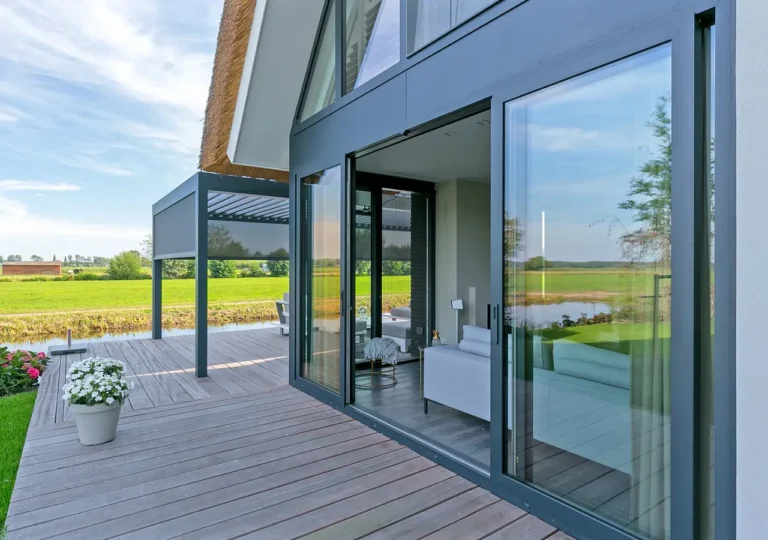
Vier vakgebieden, één aanspreekpunt. Wij combineren vakmanschap met modern design en maken alles op maat voor uw woning.
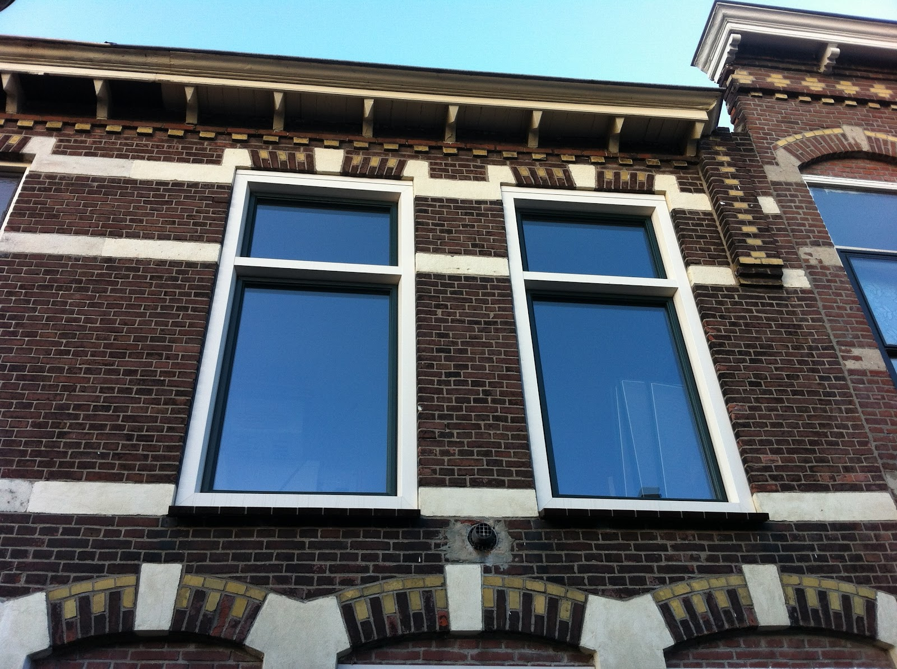
In kunststof, hout of aluminium.
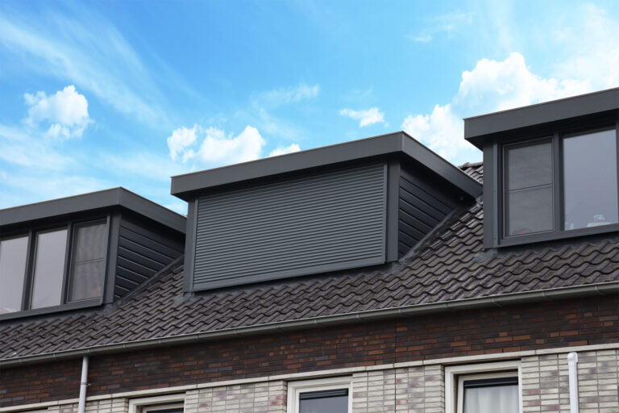
Extra licht en ruimte, geplaatst in één dag.
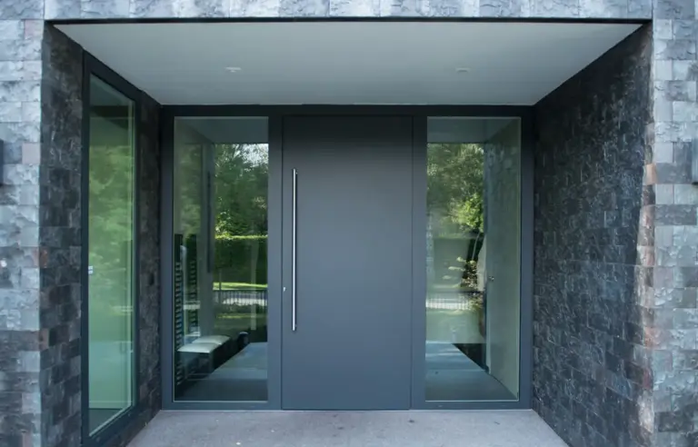
Veilig, stijlvol en op maat gemaakt.
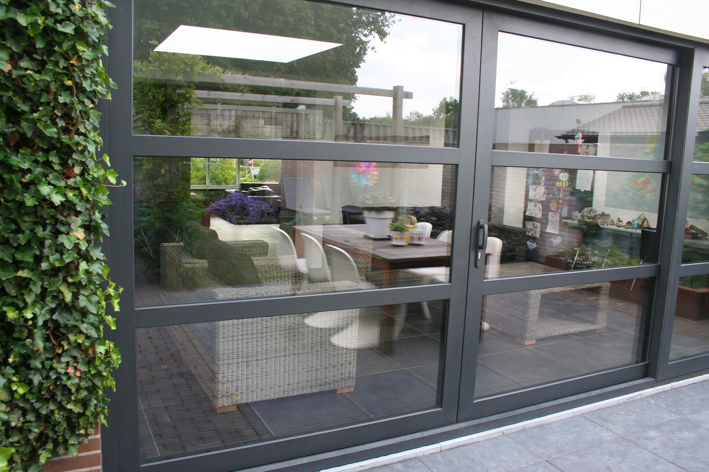
Meer licht en verbinding met de tuin.
Onderhoudsarm, goed geïsoleerd en strak afgewerkt. Kies het materiaal dat bij uw huis past, met dubbel glas, HR++ of triple glas. Wij adviseren u graag.
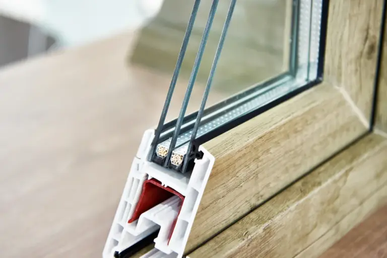
Duurzaam, milieuvriendelijk en zonder schilderwerk, met een levensduur tot wel 75 jaar. Hoge isolatiewaarde, warmte blijft binnen en geluid buiten. Verkrijgbaar in veel kleuren en levensechte houtnerven.
Licht, corrosiebestendig en in vrijwel elke kleur, ook verschillend aan binnen- en buitenzijde (bicolor). Met 3 kamers en 3 dichtingen voor optimale geluids- en warmte-isolatie.
Een warme, authentieke uitstraling met een lange levensduur. Gemaakt van hoogwaardige én eerlijke materialen, voor een sfeervolle woning.
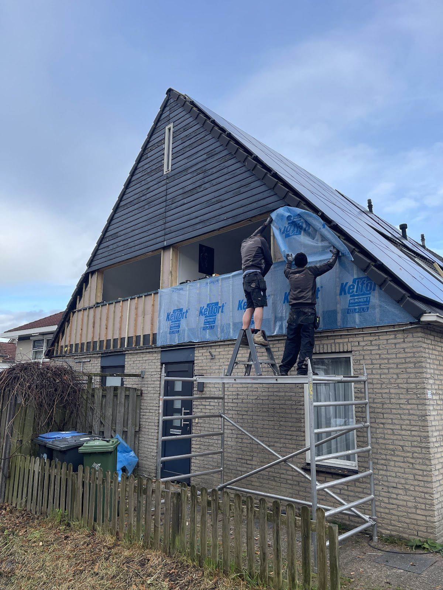
Sinds 1996
Al bijna 30 jaar kozijnen, deuren en dakkapellen.
U heeft één aanspreekpunt en eigen, ervaren monteurs over de vloer. Persoonlijke service, heldere afspraken en een resultaat waar u trots op bent.
We denken met u mee en geven eerlijk advies over de beste oplossing voor uw woning.
Alles wordt bij u thuis opgemeten en op maat gemaakt. Een vergunning nodig? Dat regelen we mee.
Onze monteurs plaatsen alles vakkundig. Een dakkapel staat er vaak in één dag.
Netjes afgewerkt en opgeruimd opgeleverd, zodat u zorgeloos geniet van een comfortabel en energiezuinig huis.
Betrouwbare service, zonder aanbetaling.
Hoogwaardige materialen en maatwerk, voor meer wooncomfort en een lagere energierekening.
Reageert snel! Concurrerende prijzen! Super vriendelijk! TOP bedrijf!
Gurhan Sargin, via Google
4,2
gemiddeld uit 50 Google-reviews
"Damen & Groen heeft afgelopen september een mooie grote dakkapel geleverd. Eerste contact met de vertegenwoordiger was top. Het regelen van de vergunning ook top geregeld. De dakkapel is compleet naar onze wens geleverd en de monteurs zijn toppers. Damen & Groen bedankt 👍"
"Goede ervaring met het plaatsen van een raam op onze zolder. De verkoper nam de tijd voor ons, heeft ons echt geholpen met de keuze en een plan gemaakt voor de inbouw. Goede afspraken gemaakt, sympathieke groep werklieden, werken netjes en schoon en laten het werk ook opgeruimd achter, komen afspraken na."
"Geweldig goede ervaring met Damen &Groen! Ze hebben alle raamkozijn en glas vervangen van ons huis naar zeer grote tevredenheid! Goed en eerlijk advies, perfect werk opgeleverd en keurig afgewerkt."
"Tweede keer Damen en Groen ingeschakeld voor het vervangen van kozijnen en deuren. Dit keer 2 deuren laten vervangen, een raam laten vervangen door een deur, een raam laten vervangen en overal cilinders laten aanpassen. Met 3 man waren ze met een paar uur klaar. Nette heren die wel nog een beetje zitten te geinen onderling, goed sfeertje. Regelmatig overleg momentjes en prettig meedenken. Voor een volgende klus nodig ik ze zo weer uit!"
"Mooie dakkapel geplaatst en tevens een ander kozijn vervangen. Advies en offerte waren al super en gisteren was dan de dag van levering, dat was allemaal perfect. Zeer nette monteurs die mee dachten met de plaatsing van de dakkapel en tips gaven over de afwerking (doe ik zelf)."
"Huis is 45 j oud en kozijnen hadden hun tijd gehad. Op internet 2 fabrikanten en in de buurt eveneens 2 fabrikanten aanbevolen gekregen. 4 gesprekken gevoerd, 4 offertes ontvangen. Damen en Groen werd ons keuze: profesionele indruk, de prijs en de betalingsvoorwaarden hebben de doorslag gegeven. Drie dagen lang gesloopt en gebouwd en wij zijn dik tevreden met het eindresultaat!!!"
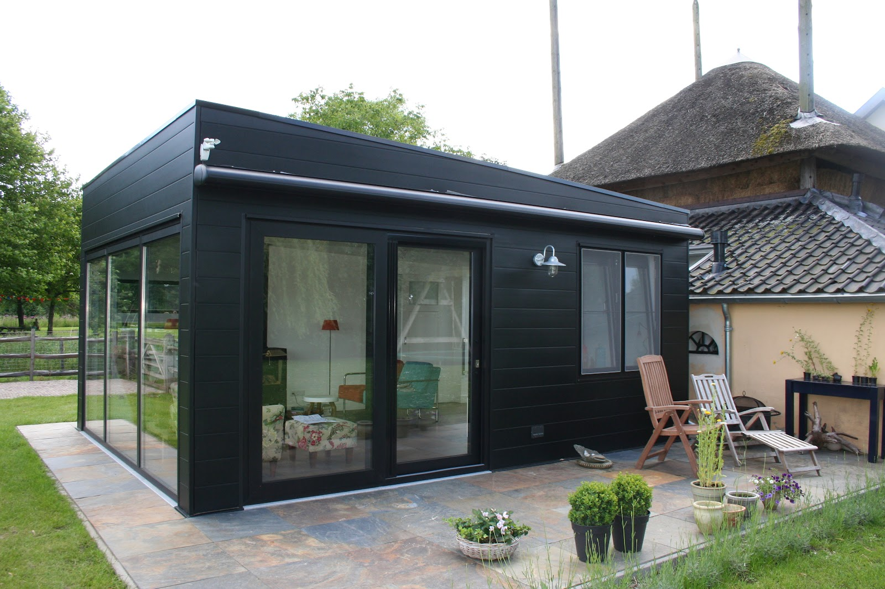
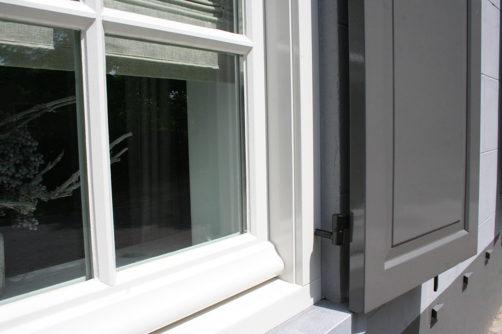
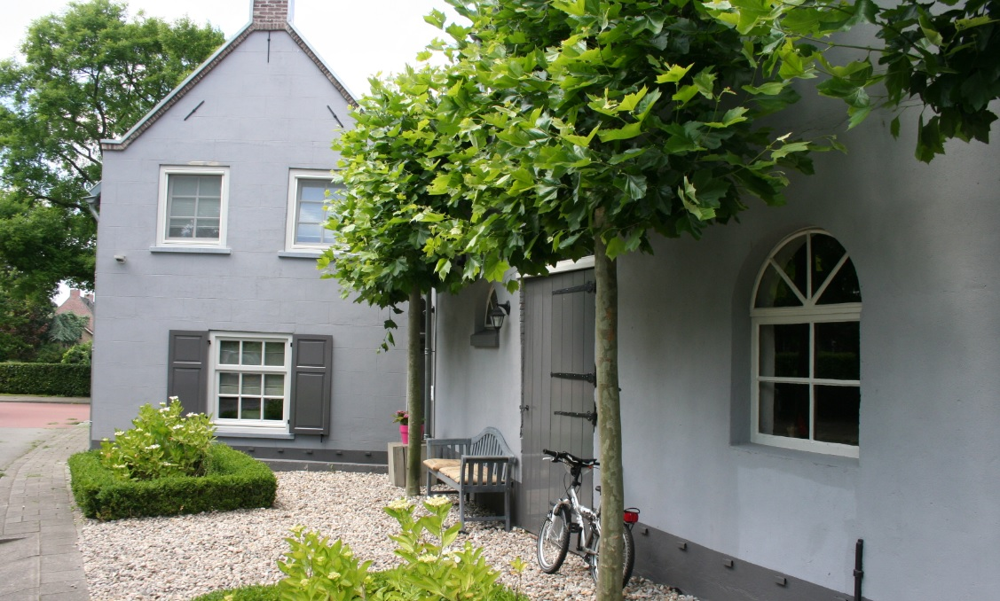
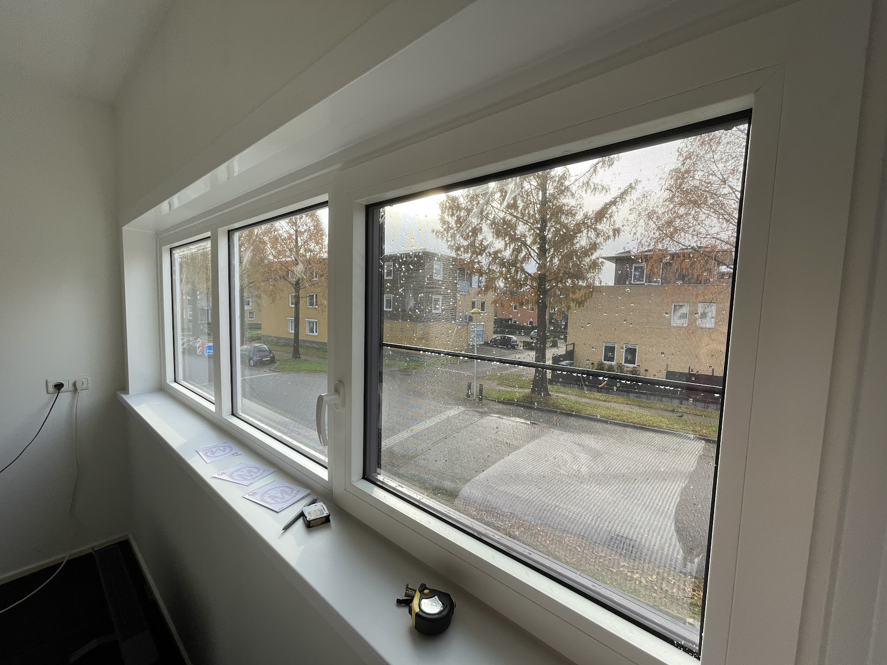
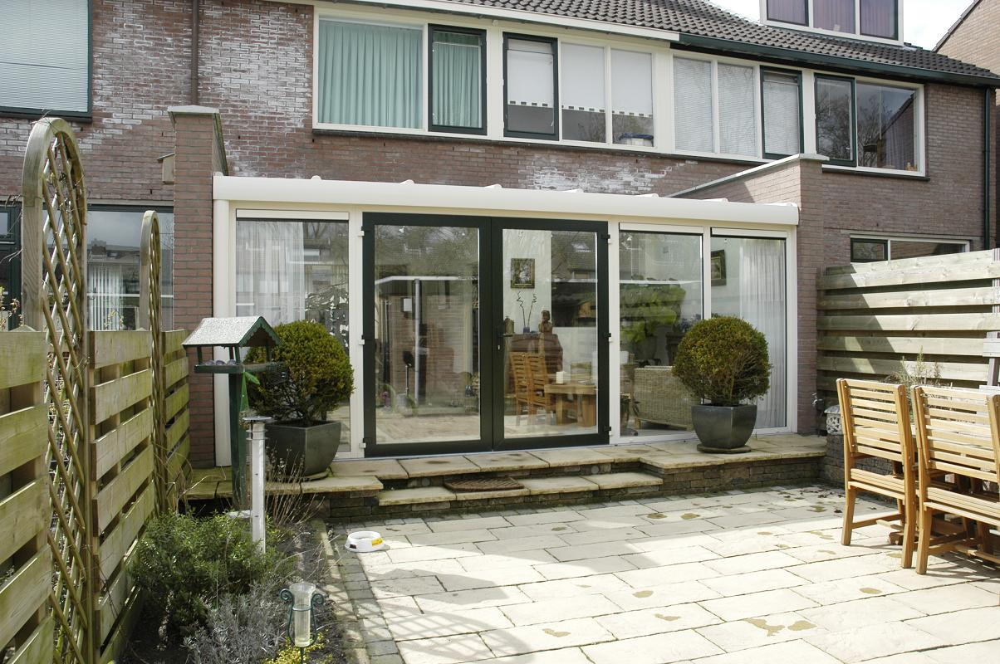
We denken graag met u mee en geven eerlijk advies over de beste oplossing voor uw woning.
Bel 0345 558 997| ma t/m do | 09:00 tot 17:00 |
| vrijdag | 09:00 tot 12:00 |
| za en zo | gesloten |
We werken in Culemborg en heel Midden-Nederland, waaronder Gelderland, Utrecht, Zuid-Holland, Noord-Holland en Brabant.